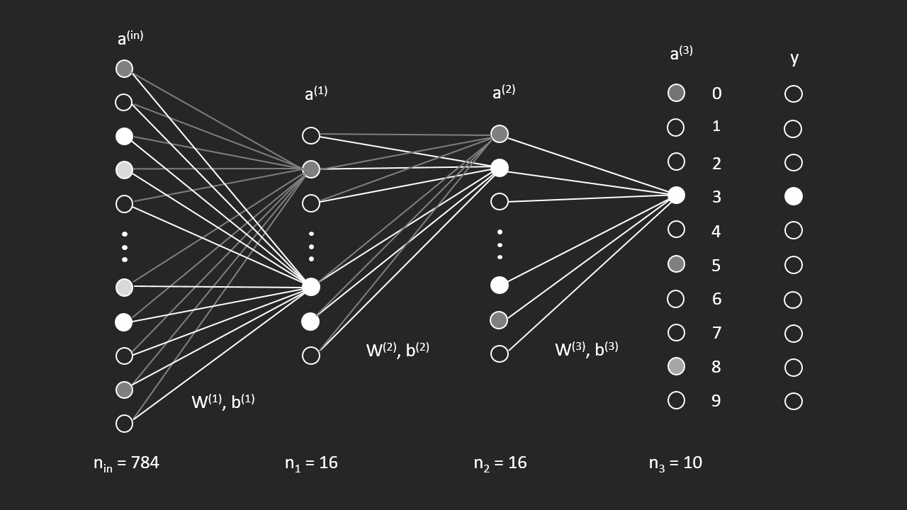

example image of drawn number on canvas

Draw / Training Buttons
Welcome to my little AI project, where I've created and trained a neural
network from scratch only by math and basic programming.
This network is capable of detecting handwritten numbers between 0-9. You
can choose between a pretrained network or train the network
YOURSELF.
The pretrained network has been trained by the
MNIST
dataset for about 60 hours. This dataset consists of 60.000 digits,
handwritten on a 28x28 pixel canvas.
Above, you can see the networks layout. It has 784 (=28x28) input neurons,
which represent the font weight of a given pixel. These inputs run through
the network, leading to new
activation values a(i) in the next layer. This goes on
until we reach the output layer where the activation values represent how
likely the network thinks a certain number is the one that was drawn.
The activation values are determined by rather simple matrix
multiplication with the weights W(i) and biases
b(i). At the output layer we want to reduce the activation
values for wrong numbers and raise the one for the correct number. For
this, the weights and biases undergo value changes depending on complex
mathematics (see
README). This process is referred to as backpropagation. When you
train your own network you will start with random values for all 13.002
weights and biases, which then can be trained via backpropagation with
some included test data. You should see that it doesn't need that much
training cycles to get promising results.
Thanks for trying out my program :) luniphys
The mathematical theory behind this project was heavily inspired by the legend 3Blue1Browns' series NEURAL NETWORKS